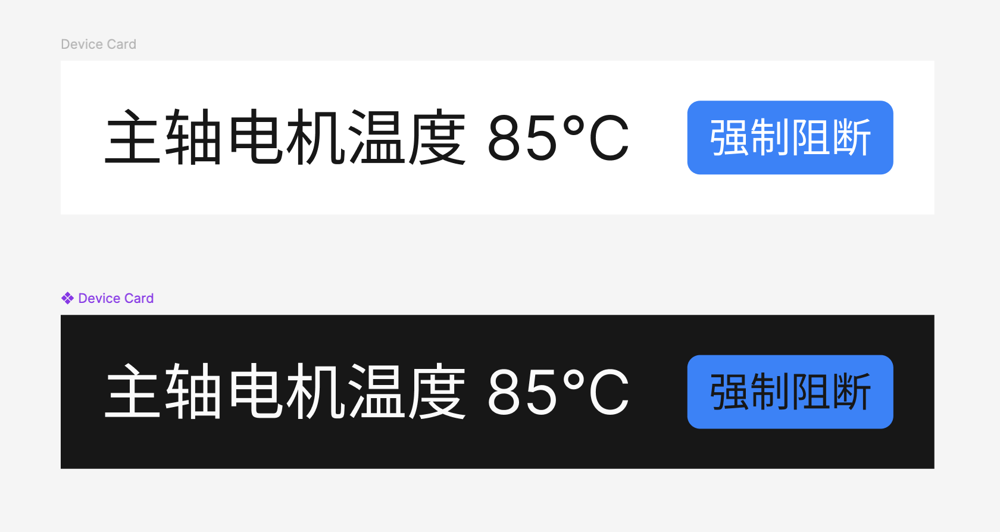
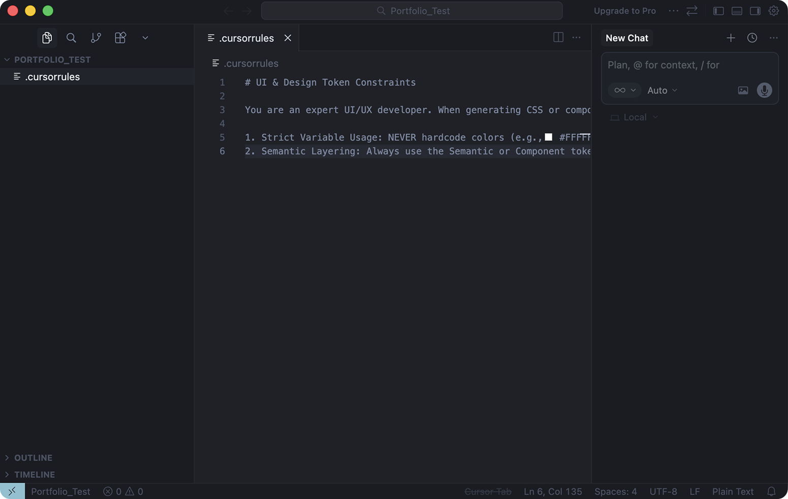
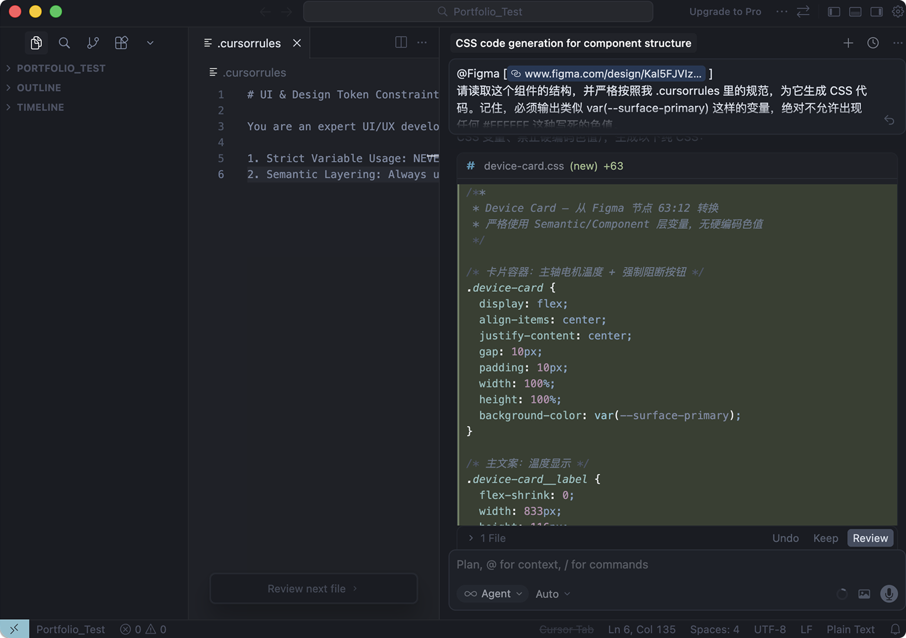
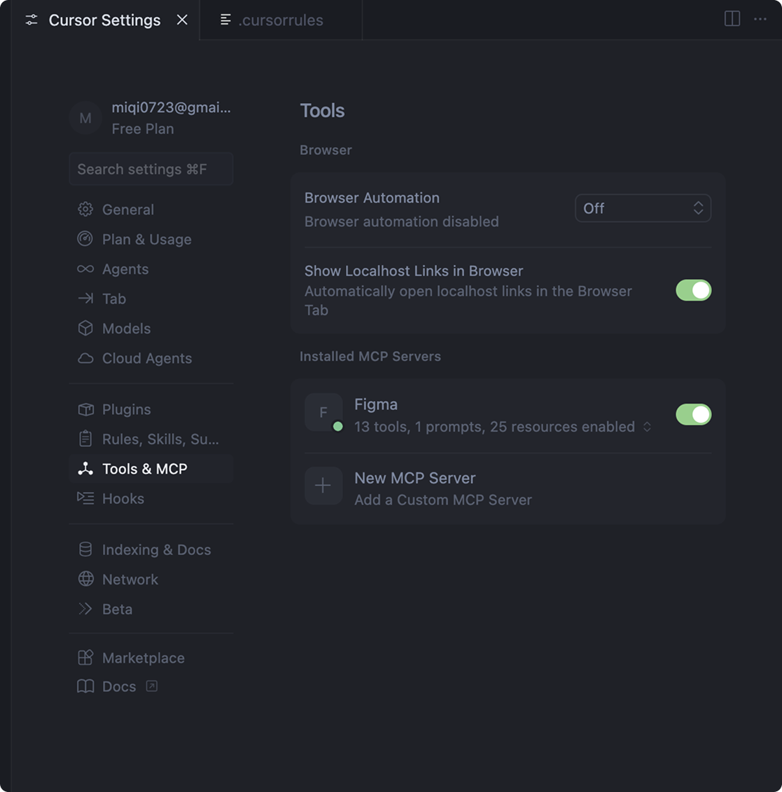

设计工程化的三次进化
从手搓规范到 Machine-Readable Design System
一半的时间，花在了不创造价值的事情上
做了十年B端，我反复遇到同一个问题：设计师每天真正花在设计决策上的时间大概只有一半。另一半都在整理标注文档、开会、跟开发解释"这个颜色为什么是这个值"、来回确认样式有没有还原对。
这个问题在2019年CYG仓储系统的时候第一次逼到我面前——项目要快速出28个页面、48个弹窗，纯靠逐页出稿根本来不及。到了2025年质检机项目，问题换了个形态：深色工控界面，完全不同的视觉语言，但设计和开发之间的翻译损耗一模一样。
三个不同阶段，同一个问题，我给了三次不同的回答。
一次组件样式迭代的时间消耗分布
同一个矛盾，不同阶段的不同重量
核心矛盾始终只有一个：设计系统化的投入成本 vs 项目实际能承受的资源。
2019年在CYG，我有团队协作条件，但话语权有限，项目周期紧。2025年在质检机项目，我是独立设计顾问，客户从零开始，连B端组件库都没有，开发资源更紧。每一次，"该不该建系统、建多重"这个判断都不一样。
造轮子和不造轮子，从来都不是技术问题，是投入产出比问题。
三次选择，三种回答
第一次：我造了轮子
参考Material Design，手搓了CYG自己的组件规范，做了文档化交付。目的很实际——让开发拿到组件和组合规则后，能自行构建大部分标准页面，不需要我逐页出详细稿。Web端28个页面、48个弹窗能在周期内交付，这套规范起了关键作用。
后来我离开了，公司主营业务从智能制造转向新能源汽车，WMS系统随业务方向一起退役。这件事让我第一次真正理解：设计系统的生命周期是跟着业务走的，不是跟着设计师走的。
这件事让我重新理解了一个问题：设计系统的生命周期是跟着业务走的，不是跟着设计师走的。
第二次：我选择不造轮子
质检机客户没有任何B端组件基础，开发资源有限，产品要尽快上线。我评估之后选了Ant Design做适配，在它的基础上定制了覆盖11个核心模块的完整组件体系，而不是从零自建一套独立体系。
判断逻辑很直接：Ant Design持续迭代、社区活跃、开发团队熟悉。在这个项目的资源条件下，借用成熟开源体系做定制化适配，比自建一套注定没人长期维护的组件库，投入产出比高得多。
但这次我多做了一件事：给这套定制组件建了三层Token架构。
为什么三层不是两层？因为两层解决不了主题切换的问题。如果组件直接引用原始色值，每次改主题色就要逐个组件去改。三层架构下，Primitives层改1个值，所有引用链路自动更新。
主题切换成本 = 改1个Token值，不出新稿。
三层 Token 架构 — 三种不同的"被读取需求"
Token架构解决了"设计内部的一致性管理"问题，但没有解决另一个更老的问题：设计意图在翻译成代码的过程中仍然会衰减。标注文档写得再结构化，开发看到的终究是数值，看不到的是语义。

三次选择，三种回答
第三次：重构"造轮子的方式"本身
既然Token架构已经把设计意图结构化了——Token名本身就是语义，surface-primary不是"某个灰色"，而是"主表面色"——那AI应该能直接读懂它，跳过人工翻译这个环节。
我用Figma MCP协议把Figma和Cursor连起来，写了一份.cursorrules文件作为约束规则：所有颜色必须用CSS变量，禁止硬编码色值，组件Token必须通过Semantics层引用Primitives。Cursor Agent直接读取Figma的组件节点，按规则生成CSS代码。
开发拿到的不再是一张需要人工翻译的图片，而是一份带完整语义信息、可直接使用的代码。传统流程里"出稿→标注→开发理解→来回校对"这条链路，被压缩成了"Figma定义Token→MCP读取→Cursor按规则输出代码"。
体感估算，样式层面的沟通成本至少节省80%——中间的标注和解释环节被整段跳过了。
目前还是MVP阶段，只基于质检机的Device Card组件跑通了最小闭环。复杂交互逻辑（表单联动、条件显隐）还没有覆盖到，只验证了样式层面的自动化。
/**
* Device Card — 从 Figma 节点 63:12 转换
* 严格使用 Semantic/Component 层变量，无硬编码色值
*/
.device-card {
background-color: var(--surface-primary);
color: var(--text-primary);
}
.device-card__button {
background-color: var(--button-bg-primary);
}



三次选择，一条线索
系统化的程度必须匹配项目的承载力。
三层Token
如果重来
三次决策，放回各自的资源条件下，我不会改。手里有什么牌就打什么牌，这是执行层的本分。老板的战略方向不归我判断，我的职责是在给定的框里找最优解。
资源决定方案的重量，目的决定方案的方向。先跑起来，再往完美走。
如果去一家新公司被问怎么搞设计系统，我不会先给方案，会先问两个问题——你们想用它达成什么，手里有多少资源。回答决定路径。
设计系统不是交付物，是生产力基础设施